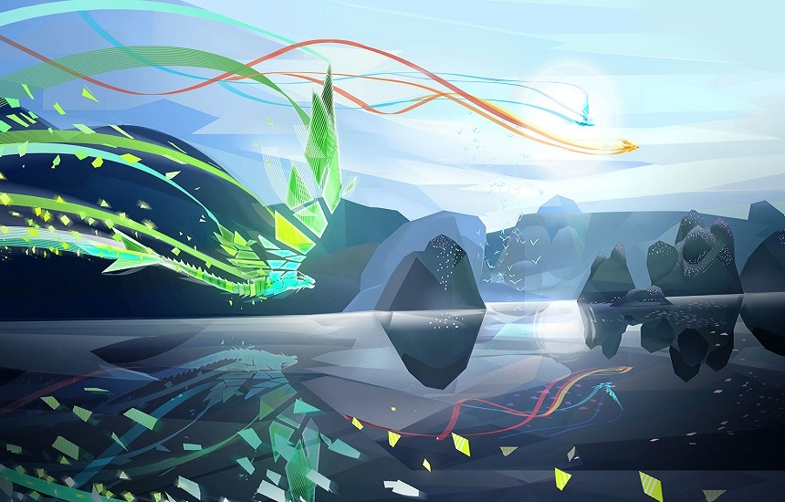
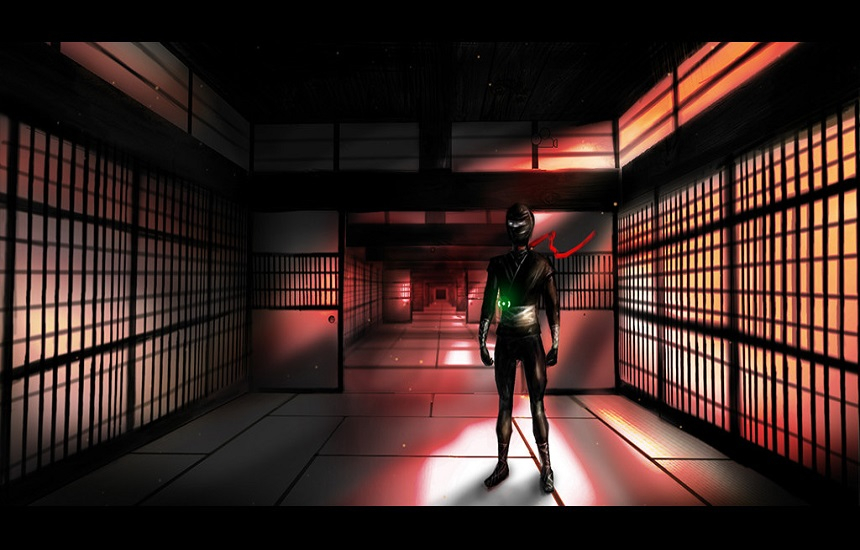
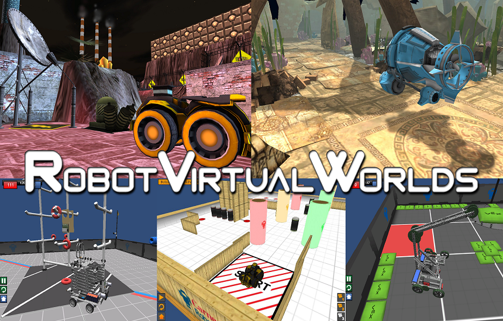
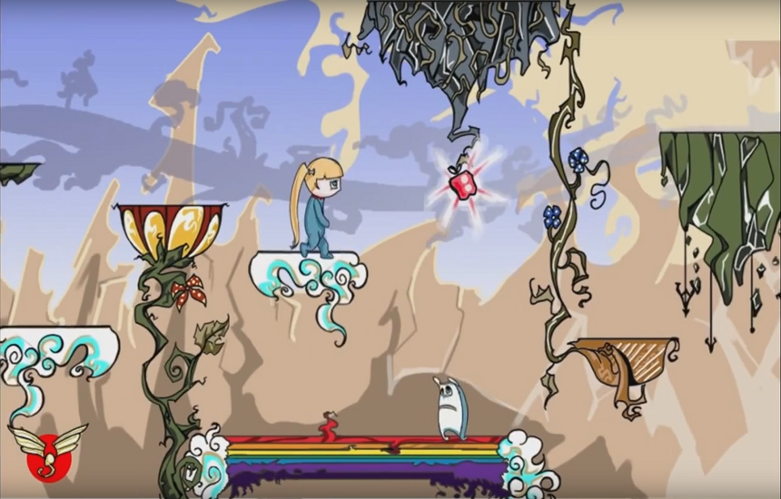
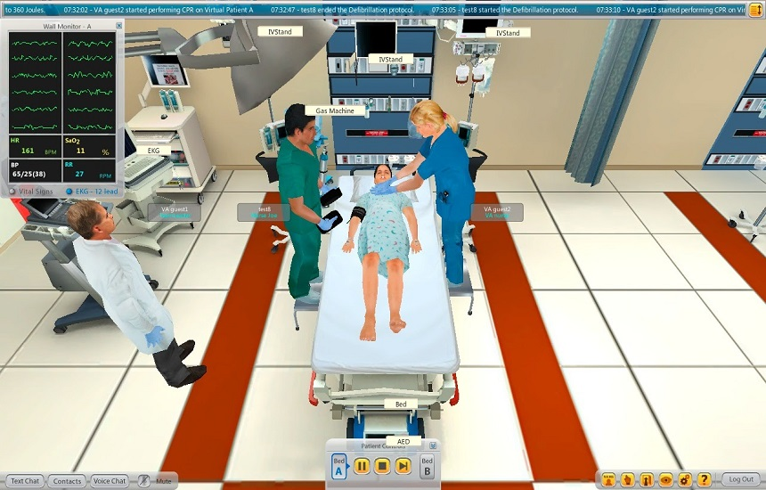
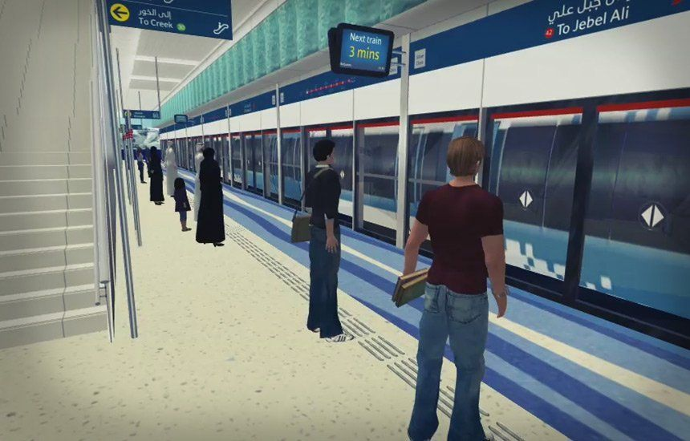

Entwined Entwined is a game about two souls, a bird and a fish, that are in love but can’t be together. Once united, the two souls will transform into a magnificent soaring dragon. Its available on PS4, PS3, Vita, iOS and Android.
Ninja Challenge
It uses head tracking as a gameplay mechanic. The player should move their head to the designed position to find the weak spot on the ninjas and punch them.
Robot Virtual Worlds
A simulation environment that is used to teach students how to virtually program Lego Mindstorms NXT robots using the ROBOTC language.
FRANK - Experience Design
This is an homage to 2001: A Space Odyssey. It is an experience that can be enjoyed by 10 or more people together in a room. It uses a surface table and Jam-O-Drum as a platform.
Pillow Girl
This was a two week project where the goal was to come up with an interesting lead character. We came up with a bunch of ideas and decided to implement a level for the Pillow & Girl. You play as a pillow and guide the girl through the level.
Clinispace
A healthcare simulation that allows physicians to be trained for a variety of scenarios through practicing patient care and clinical management with interactive devices affecting the health of virtual patients with conditions across specialties.
Dubai Metro
A transport simulation made for the government of Dubai. It was created to promote the use of newly create metro rail network. The simulated 3D environment teaches users on how the metro operates and allows them to explore and travel in and around lifelike versions of the stations.